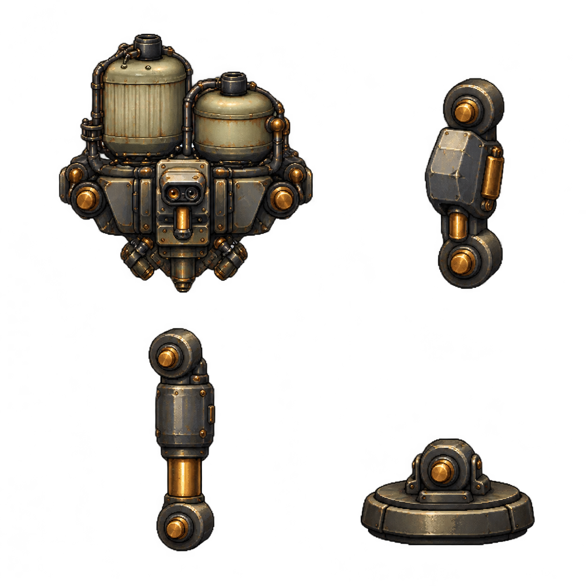

비활성 독립 staging. image_gen1회/1PNG/자동 재생성0. 새 원문은 차체1+공유 upper1+공유 lower1+발판1이며16새프레임으로 세지 않습니다. PNG를 편집/마스크/추출하지 않고 source-fragment를 표시합니다. 메인 게임을 불러오지 않았고 실제4다리 보행/지면 접촉은 승인하지 않습니다.
초록 링은 직접 본 불투명 핀의 수동 중심, 주황 링은 보이는 보스의 후방 힙 해석이 아직 추정인 점입니다. 붉은 선은 source의 실제 projected proximal→distal 벡터이며 cyan은 발판 sole 기하 힌트입니다. 표식은 SVG 진단 위에만 있고 원문에는 없습니다.
